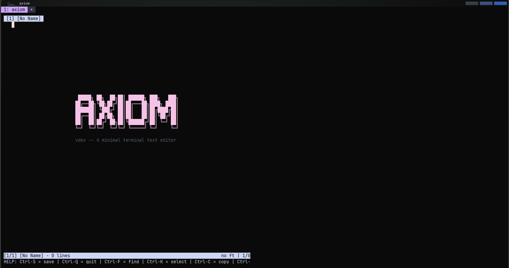
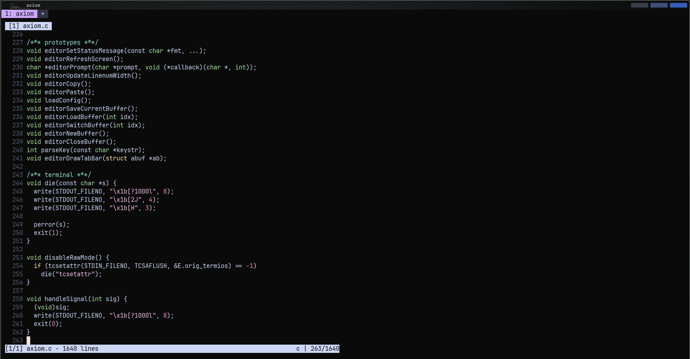
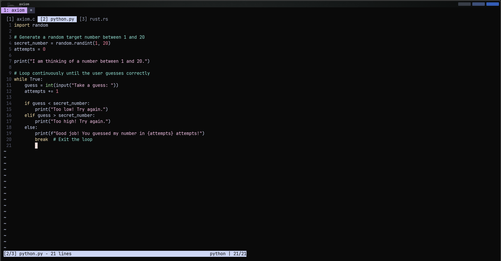
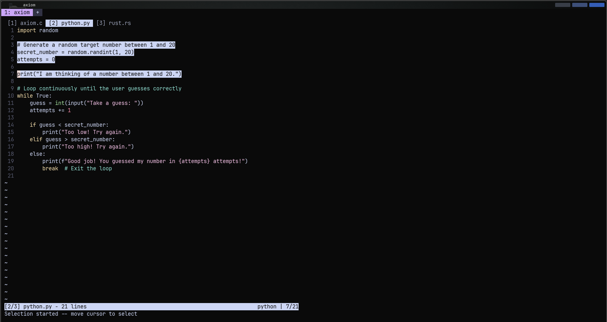

█████╗ ██╗ ██╗██╗ ██████╗ ███╗ ███╗ ██╔══██╗╚██╗██╔╝██║██╔═══██╗████╗ ████║ ███████║ ╚███╔╝ ██║██║ ██║██╔████╔██║ ██╔══██║ ██╔██╗ ██║██║ ██║██║╚██╔╝██║ ██║ ██║██╔╝ ██╗██║╚██████╔╝██║ ╚═╝ ██║ ╚═╝ ╚═╝╚═╝ ╚═╝╚═╝ ╚═════╝ ╚═╝ ╚═╝
A minimal terminal text editor. No dependencies. Just C.
Three ways to get Axiom running. Pick what works for your setup.
Also available:
axiom-linux-aarch64 ·
axiom-macos-x86_64 ·
axiom-macos-aarch64
— see the releases page.
Requires Homebrew. Works on macOS and Linux.
One C file. No external dependencies. Builds with any C99 compiler in under a second.
Axiom editing code, switching buffers, and selecting text.




Default bindings. Buffer navigation keys are remappable in ~/.axiomrc.